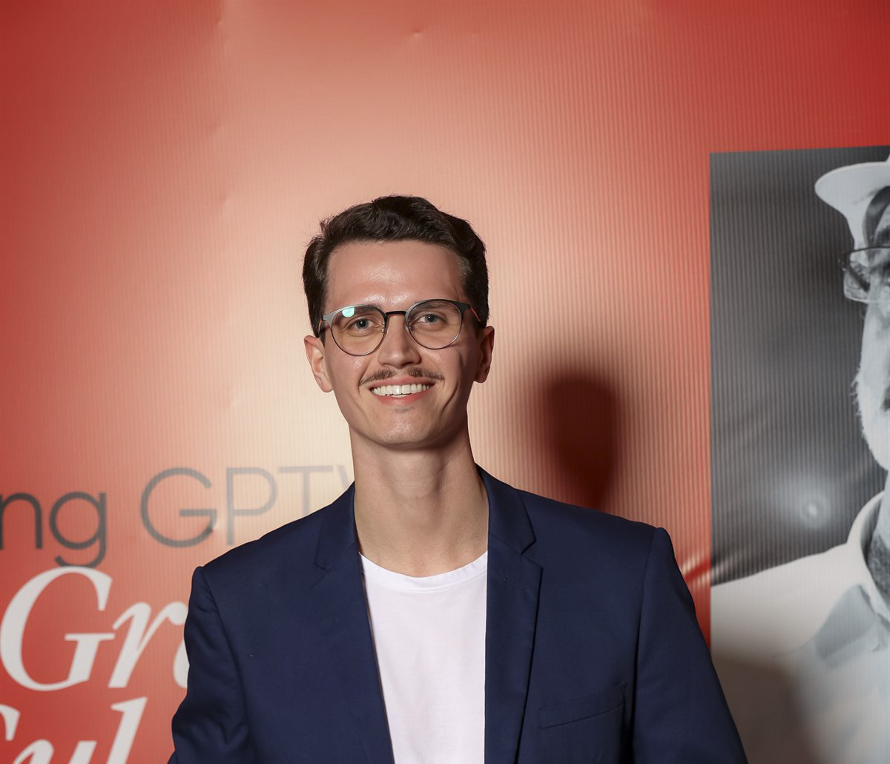

Using Classic Design Patterns to Build Scalable AI Systems
Read on Medium ↗Profile / 2026
Natan
Schons
Natan Schons is a Data Scientist at SAP building intelligent solutions for enterprise AI, specialising in RAG and GraphRAG pipelines, LLM orchestration, and Knowledge Graphs.

5+
Years in IT
30+
Global clients as Analytics Consultant at SAP
Data & AI
Building AI-powered Applications
4
Languages: PT · EN · DE · ES
01 / About
Engineering, AI & enterprise data.
Natan is a Data Scientist at SAP, working in the Language Experience Lab to evolve AI-powered translation solutions for SAP products across multiple languages globally. His path combines rigorous AI engineering with deep knowledge of the SAP ecosystem. Previously an Analytics Consultant at SAP, working with 30+ global clients on SAP Datasphere, SAP Analytics Cloud, and AI-powered analytics.
With 5+ years in IT, he works daily with LLMs, RAG pipelines, Knowledge Graphs, Ontologies, embeddings, and vector stores, integrated with SAP BTP and SAP AI Core. He contributes to strategic AI initiatives and state-of-the-art Prompt Engineering research within SAP. Fluent in Portuguese, English, German, and Spanish.
Core AI & LLMs
- RAG & GraphRAG Pipelines
- Knowledge Graphs & Ontologies
- Embeddings & Vector Stores
- Prompt Engineering & LLM Evals
Enterprise & Cloud
- SAP BTP & SAP AI Core
- SAP Datasphere & SAC
- Python, PydanticAI & Langchain
- Scalable ML & API Architecture
Languages & Global
- Portuguese (Native)
- English (Fluent)
- German (Proficient)
- Spanish (Proficient)
02 / Building
In active development
oBriefing.
Clipping shows what already ran. The Radar shows where your client can step in.
An AI-powered media intelligence platform for PR and communications agencies in Brazil. It watches the news portals so the team starts the day with the coverage and the openings that matter for each client.
-
01
Portal monitoring
Tracks news portals for each client your agency handles.
-
02
Morning clipping
The day's coverage, delivered every morning at 7:30.
-
03
Opportunity Radar
Surfaces story angles where a client can enter the conversation.
-
04
Pitch drafts
A draft pitch for each client, ready for the team to refine.
03 / Writing
Latest
articles.
04 / Contact
Let's talk.
Enterprise AI, NLP, ML, RAG and knowledge graphs, or oBriefing: write to me and I'll get back to you.
- 01 / Code GitHub Personal projects spanning RAG systems, ML APIs, SQL pipelines, and applied AI experiments.
- 02 / Network LinkedIn Professional presence and career updates within the SAP and AI engineering ecosystem.
- 03 / Writing Medium Articles on Data Science, Machine Learning, and AI, written for engineers who care about the craft.
- 04 / Credentials Curriculum Vitae Detailed overview of professional background, enterprise AI architecture, and milestones.